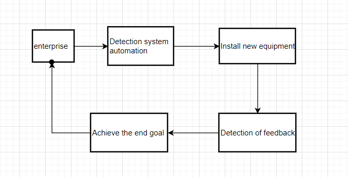
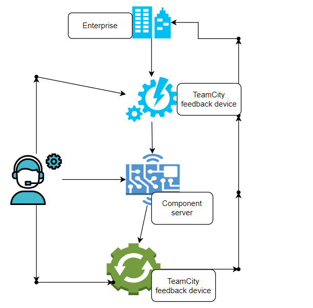

I hope to be able to implement enterprise automation technology later
| Detection feedback unit | Component server |
| Need software: TeamCity 2021.2 | Hardware required: VMware Horizon Client version 4.8.0 or later |
The flow chart 
The procedure of this project is relatively complete. It will detect at the very beginning, find out the missing or insufficient places and make modifications, and then carry out the detection to check whether it reaches the standard, and then upload the report to get the final feedback to complete the purpose
System diagram 
Here is a system diagram that depicts the equipment and tools required, with detailed diagrams that make it easy to understand